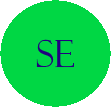

Sissejuhatus erialasse
Sissejuhatus erialasse kursuse eesmärk on anda tudengitele üldülevaade informaatikute rollist ühiskonnas, nendega seotud ametikohtadest; arvutiteadusest ja selle ajaloost. Motiveerida tudengeid nende edasistes õpingutes informaatika alal.
Allikas: https://courses.cs.ut.ee/2017/SE/fall